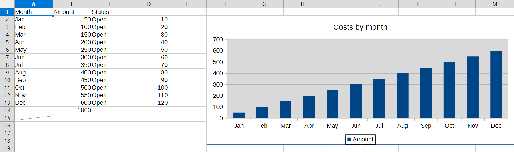

OpenDocumentSpreadsheets.jl
Read and write OpenDocument spreadsheets (.ods, .fods, .ots) in pure Julia.
OpenDocument (ISO/IEC 26300) is the spreadsheet format of LibreOffice and of the public bodies that standardise on open formats. OpenDocumentSpreadsheets reads and writes it directly: no Python, no LibreOffice and no other program is needed. What it writes is what LibreOffice writes, so a file made here opens in LibreOffice Calc looking as it would had you made it there.

If you know XLSX.jl, its functions are here with the same names and arguments: Coming from XLSX.jl lists the few differences.
Installation
using Pkg
Pkg.add(url = "https://github.com/TimG1964/OpenDocumentSpreadsheets.jl")OpenDocumentSpreadsheets supports Julia 1.10 and later.
A first look
using OpenDocumentSpreadsheets
xf = readods("budget.ods") # open a file
sheetnames(xf) # ["Income", "Costs", ...]
sh = xf["Costs"]
sh["B3"] # one value
sh["A1:C10"] # a matrix of values
dt = readtable("budget.ods", "Costs") # a table, for DataFrames or any Tables.jl sink
writetable("out.ods", dt; sheetname = "Costs") # write it backWhere to go next
- Getting started walks through reading, writing and editing a file.
- Supported features lists what the package does.
- The guide's sections cover data, formatting, layout, sheets, pictures and notes, and charts, each with pictures of the result in LibreOffice.
- The API reference documents every function.